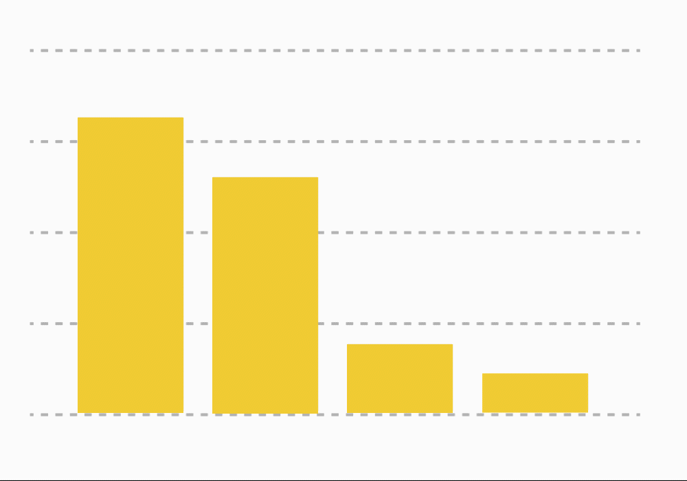
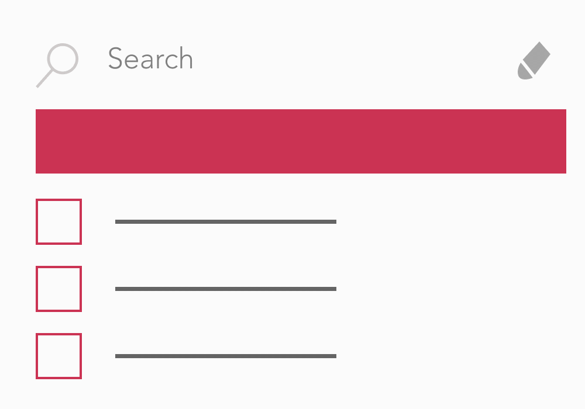
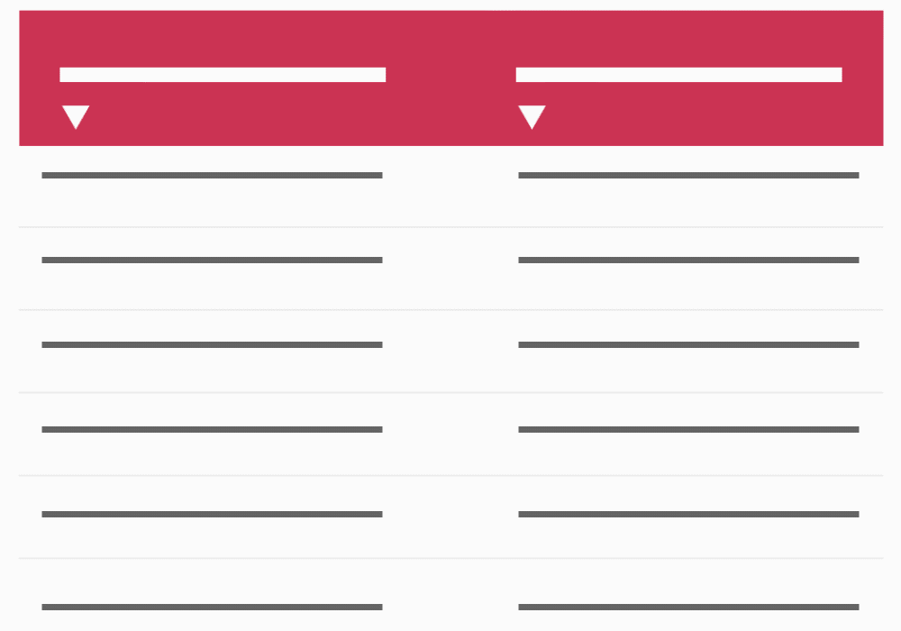

Formas de Filtrar
Sección Investigación

Al hacer clic en un objeto visual de cualquier grafica los datos se filtrarán automáticamente en toda la página.

Al hacer clic en una o más categorías los datos se filtrarán automáticamente en toda la página.

Las tablas mostraran el conjunto completo de los datos de toda la pagina y se transformaran de acuerdo a los filtros u objetos que selecciones.
Ir a la plataforma